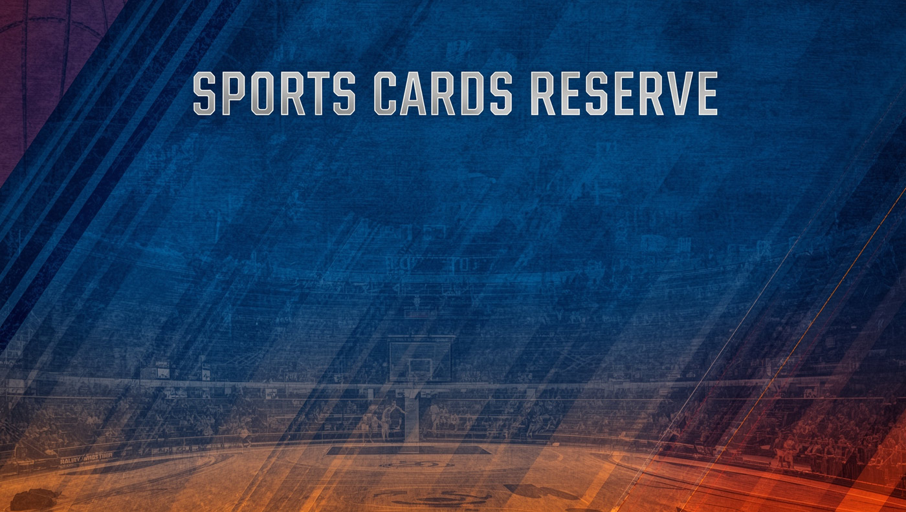

Buy and sell basketball cards, baseball cards, football cards, and hockey cards. Rookie cards, hobby boxes, autographs, vintage collectibles, and graded slabs.
Featured Sports Cards For Sale
Shop Trading Cards from Topps, Panini, Upper Deck and More
Why Collectors Shop Sports Cards at Sports Cards Reserve
The sports card market has evolved from a casual hobby into a serious collectible investment category. Whether you are looking for basketball cards, baseball cards, football cards, or hockey cards, finding a trusted store with fair prices and expert knowledge makes all the difference. Sports Cards Reserve carries trading cards from every major manufacturer including Topps, Panini, Upper Deck, Fleer, Bowman, and Donruss. We stock hobby boxes, blaster boxes, packs, and individual cards across all sports. Our collection includes vintage cards from the 1950s through modern rookie releases, autographs, memorabilia cards, and professionally graded slabs from PSA and BGS. Collectors nationwide trust us for accurate card value appraisals, grading consultation, and commission sales.
Sports Cards: Trading, Collecting and Investing
Sports Card Boxes and Pack Configurations
Buying the right box is one of the most important decisions a collector makes. Hobby boxes from Topps and Panini contain more packs per box and offer significantly better odds of pulling autographs, memorabilia cards, rare parallels, and numbered inserts compared to retail products. Each hobby box typically guarantees at least one on-card autograph or game-used memorabilia hit, which is why serious collectors and investors prefer them over blaster boxes.
Blaster boxes are a more accessible entry point for new collectors and casual fans. Sold at retail stores for lower prices, blaster boxes contain fewer packs but still offer the excitement of pulling a rookie card or a foil parallel. Mega boxes bridge the gap between hobby and retail, often including exclusive content and parallels not available in standard configurations. Cases contain multiple hobby boxes and are the preferred format for dealers, shop owners, and high-volume collectors running box breaks.
What Brands Make the Best Sports Cards?
Topps dominates basketball cards and baseball cards with flagship releases like Topps Chrome, Topps Heritage, and Bowman. Panini leads football cards and soccer cards through popular series including Prizm, Select, Mosaic, and Donruss. Upper Deck holds the exclusive license for NHL hockey cards and produces premium products alongside the classic O-Pee-Chee line. Fleer, while no longer producing new releases, remains beloved among collectors of vintage basketball cards from the 1980s and 1990s. Each brand brings different strengths. Understanding those differences helps you shop for cards that match your collecting goals, whether you are building a binder of your favorite team, chasing rare edition inserts, or acquiring cards for long-term investment in the market.
New Releases and Updates
Stay current with the latest releases from Topps and Panini. New series drop throughout the year with different products targeting different collector segments. Flagship releases establish the base set and rookie class, while premium products like Topps Chrome and Panini Prizm appeal to the grading community. Check our store for updates on release dates, pricing, and pre-orders for upcoming hobby boxes and blaster boxes.
Professional Card Grading from PSA and BGS
Grading transforms raw sports cards into authenticated, condition-verified collectibles sealed in protective slabs. Professional Sports Authenticator (PSA) and Beckett Grading Services (BGS) are the two most recognized companies in the industry. A PSA 10 gem mint grade or BGS 9.5 gem mint designation dramatically increases card value, often by 3X to 10X compared to ungraded copies of the same card.
The grading process evaluates centering, corners, edges, and surface condition on a 10-point scale. Cards in mint condition that receive perfect grades become the most sought-after items in any collection. For vintage cards, even lower grades hold significant value because finding pre-1980 cards in excellent condition is exceptionally rare. Every serious collector should understand how grading affects prices and which cards in their collection are worth submitting.
Determining Sports Card Value
Card value is driven by multiple factors working together. The player matters most because rookie cards of stars and Hall of Fame athletes command premium prices across all sports. Beyond the player, the specific card matters: manufacturer (Topps, Panini, Upper Deck), series (Chrome, Prizm, Select), edition (base, parallel, short print), print run (numbered cards and 1/1 exclusives), and condition grade all influence what buyers will pay on eBay and in private sales.
Market Analysis and Price Tracking
Smart collectors track three key metrics: sales volume, velocity, and variance. Volume shows how actively a card trades. Velocity reveals momentum shifts that predict price movement. Variance identifies arbitrage opportunities where cards trade below fair market value. Our store provides card value appraisals, helping collectors understand exactly what their cards, boxes, and complete collections are worth in the current market.
Autographs and Memorabilia Cards
On-card autographs are among the most valuable items in the trading card hobby. When a player signs directly on the card, rather than on a sticker applied during production, the result is a premium collectible with strong demand. Game-used memorabilia cards contain actual jersey, bat, or equipment patches embedded in the card. Both autographs and memorabilia cards appear as guaranteed hits in hobby boxes, making them the primary reason collectors pay premium prices for hobby configurations over retail products.
Building a Sports Card Collection
Every great collection starts with a focus. Some collectors pursue a specific player across every release and parallel. Others build complete sets by series or target a single team across all sports. The hobby welcomes every approach, from casual fans filling a binder with their favorite athletes to serious investors assembling portfolios of graded gem slabs. Whatever your collecting style, the key is buying cards you love from sellers you trust at prices the market supports.
Sports Cards as an Investment
The sports card market has attracted serious investment attention in recent years. Rookie cards of generational athletes have delivered returns that rival traditional financial instruments. A 1986 Fleer Michael Jordan rookie PSA 10 is now worth over $400,000. A 2024 Bowman Chrome Cooper Flagg Superfractor Autograph 1/1 sold for $97,600 before his first NBA game. These numbers reflect a broader trend of collectors treating cards not just as memorabilia but as alternative assets with real appreciation potential.
Successful card investing requires the same discipline as any market. Diversify across sports, manufacturers, and player tiers. Focus on condition because the difference between PSA 9 and PSA 10 represents a significant value multiplier. Target mid-tier parallels and numbered inserts that offer strong risk-adjusted returns. Monitor releases, track sales data, and understand that timing matters. Pre-debut accumulation of rookie cards often produces the strongest returns when player performance validates the investment thesis.
Vintage Cards and Long-Term Value
Vintage trading cards from the 1950s through 1980s represent a distinct segment of the market with unique dynamics. Supply is permanently fixed since no additional cards will ever be produced. Cards in mint condition from these decades are exceptionally rare because they were handled by children, stored in shoeboxes, and clipped to bicycle spokes. A vintage card in PSA 8 or higher condition from a key set is a collectible asset with proven long-term demand. Baseball cards from Topps, basketball cards from Fleer, football cards from Topps, and hockey cards from O-Pee-Chee all have established value hierarchies that serious collectors study and pursue.
Selling Your Sports Cards
When it is time to sell, you want a partner who knows the market. Sports Cards Reserve offers commission sales where we handle everything from professional photography and market pricing to eBay listing and sale execution. We buy individual cards, boxes, cases, and complete collections. Whether you inherited a vintage collection, accumulated modern releases, or want to cash out graded slabs, we provide fair appraisals and maximize your return. Contact our store to discuss your collection.

The Complete Guide to Sports Cards: Trading, Collecting and Market Insights
The sports card industry has undergone a transformation over the past decade. What was once a casual hobby centered around packs of baseball cards at the corner store has become a sophisticated global market with institutional interest, professional grading infrastructure, and an active trading ecosystem that generates billions in annual sales. Whether you are a seasoned collector building a curated portfolio of gem mint slabs or a newcomer curious about opening your first hobby box, understanding the landscape is essential.
How Trading Cards Became a Collectible Investment Category
The evolution from hobby to investment happened gradually, then all at once. For decades, sports cards were primarily about the joy of collecting. Fans would buy packs from Topps, Fleer, and Donruss, organize them in binders, and trade duplicates with friends. The market existed but it operated informally, driven by price guides and local card shop expertise rather than real-time sales data and professional authentication.
Everything changed when professional grading from PSA and BGS created a standardized condition scale. A raw card in unknown condition became a graded slab with verified authenticity and a specific grade. This standardization made sports cards fungible and comparable, the two prerequisites for any functioning market. Today, graded rookie cards of top athletes trade like financial instruments, with prices reflecting player performance, supply constraints, and collector demand across global platforms like eBay.
Basketball Cards, Baseball Cards, Football Cards, Hockey Cards and Beyond
Each sport has its own ecosystem of manufacturers, collectors, and market dynamics. Basketball cards from Topps and Panini Prizm dominate current sales volume, driven by the NBA's global popularity and high-profile rookies like Cooper Flagg. Baseball cards have the deepest history, with vintage Topps releases from the 1950s and 1960s representing some of the most valuable collectibles in the entire hobby. Football cards from Panini benefit from the NFL's massive fan base, while hockey cards from Upper Deck and O-Pee-Chee serve a dedicated collector community.
Soccer cards represent the fastest-growing segment globally. Panini's licensing relationships with major leagues across Europe and South America have created demand that barely existed ten years ago. Pokemon cards, while not traditional sports cards, share shelf space in every card shop and compete for the same collector attention and hobby dollars. Smart collectors diversify across categories because market momentum shifts between sports based on season, star power, and new releases.
Boxes, Packs, and Cases: Understanding Product Configuration
The way sports cards are packaged and sold directly impacts what collectors can expect to pull. Hobby boxes are the premium configuration, sold through authorized dealers and card stores, containing more packs with better odds of autographs, memorabilia, and rare parallels. Blaster boxes are retail products at lower price points, available at major stores and online, offering a more accessible entry for casual collectors. Mega boxes include exclusive content and parallels not found in other configurations.
Cases are bulk purchases of multiple hobby boxes, preferred by dealers and collectors who run group breaks. Break culture has transformed how people buy sports cards, allowing collectors to purchase shares of expensive hobby boxes and receive the cards from their chosen team. This innovation has made premium products accessible to collectors at every price point while creating community around the experience of opening packs together.
Card Grading, Condition, and the Value Premium
Professional grading is the single most important factor that separates casual collecting from serious investment. PSA and BGS evaluate cards on centering, corners, edges, and surface quality, assigning a grade on a 10-point scale. The difference between grades is not linear but exponential. A PSA 9 might be worth $50, while the same card in PSA 10 commands $500. For rare cards and key rookie releases, that multiplier grows even larger.
Mint condition is the baseline expectation for modern releases pulled directly from packs. Vintage cards in mint condition are extraordinary because decades of handling, storage, and environmental exposure have degraded most surviving copies. A 1952 Topps Mickey Mantle in PSA 8 or higher is a six-figure card. A 1986 Fleer Michael Jordan rookie in BGS 10 has sold for over $700,000. Grading protects your investment, authenticates your card, and places it within the universally recognized hierarchy that buyers trust worldwide.
Autographs, Parallels, Inserts, and Special Editions
Modern sports cards feature layers of rarity beyond the base set. Parallels are alternative color or foil variations printed in limited quantities, with numbered cards explicitly stating how many exist. A base parallel numbered to 199 is more common than one numbered to 25, and a 1/1 is unique. Foil refractors, prizm variations, and color-matched parallels all carry different premiums based on visual appeal and scarcity.
On-card autographs are the gold standard of memorabilia. When a player signs directly on the card during production, the result is a permanent autograph integrated into the design. Sticker autographs, while still valuable, trade at a discount because the signature sits on an applied label rather than the card surface. Game-used memorabilia cards contain patches of actual jerseys, bats, or equipment worn during professional games. These relics connect collectors to real sporting moments and command premium prices especially when the patch features distinctive team colors or logos.
The Sports Card Market: Trading, Sales, and Prices
Market dynamics for sports cards follow recognizable patterns. Prices spike around new releases, draft events, and outstanding player performances. They consolidate during off-seasons and correct when hype exceeds fundamentals. eBay remains the primary marketplace for individual cards, providing transparent sales data that collectors use to track prices. Card shops, hobby stores, and online dealers offer curated inventory with expert authentication.
Understanding market cycles helps collectors time their acquisitions and sales for maximum value. Pre-debut accumulation of rookie cards offers the highest upside potential because prices haven't yet incorporated professional performance data. Post-debut validation creates a second surge as strong statistics confirm player quality. Long-term stabilization reflects the market's consensus view of a player's career trajectory and legacy. Savvy collectors recognize these phases and adjust their strategy accordingly rather than chasing momentum at peaks.
Starting and Growing Your Collection
The best advice for new collectors is simple: buy what you love. Start with a sport, team, or player that excites you. Visit your local card store and talk to experienced hobbyists. Open a few packs to experience the thrill of the chase. Study completed sales on eBay to develop pricing instincts. Before you spend serious money, learn the difference between hobby and retail products, understand how grading works, and research the specific series and editions that hold value.
For growing collectors, diversification matters. Spread your acquisitions across sports, manufacturers, and player tiers. Include both modern releases with immediate upside and vintage cards with established long-term demand. Set a budget and stick to it. Track your collection in a database or app. Connect with the community through social media, YouTube, Instagram, and Reddit where collectors share updates, show off pulls, and discuss market trends. The sports card hobby is as much about the people and the passion as it is about the cards themselves.